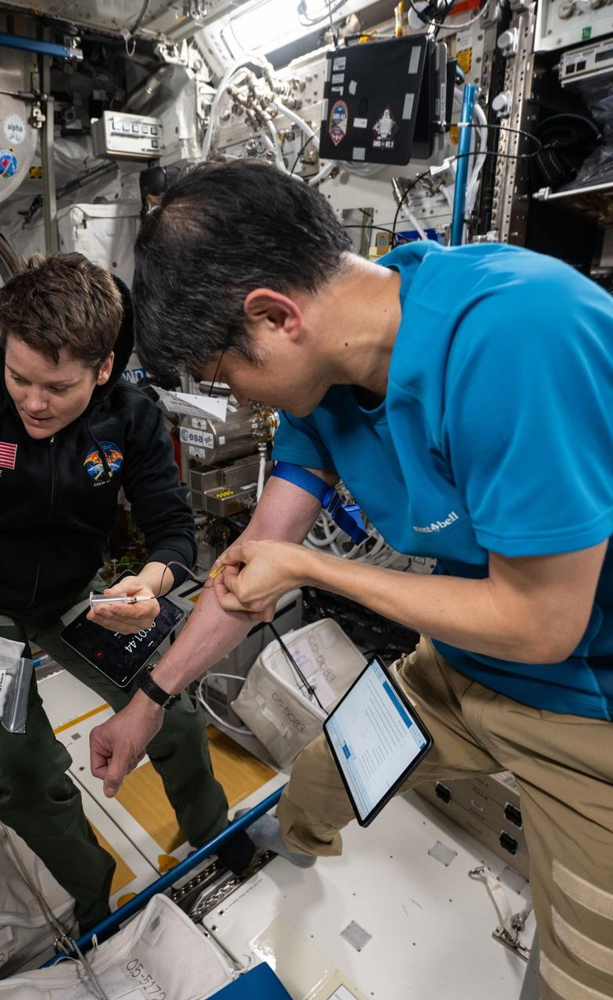
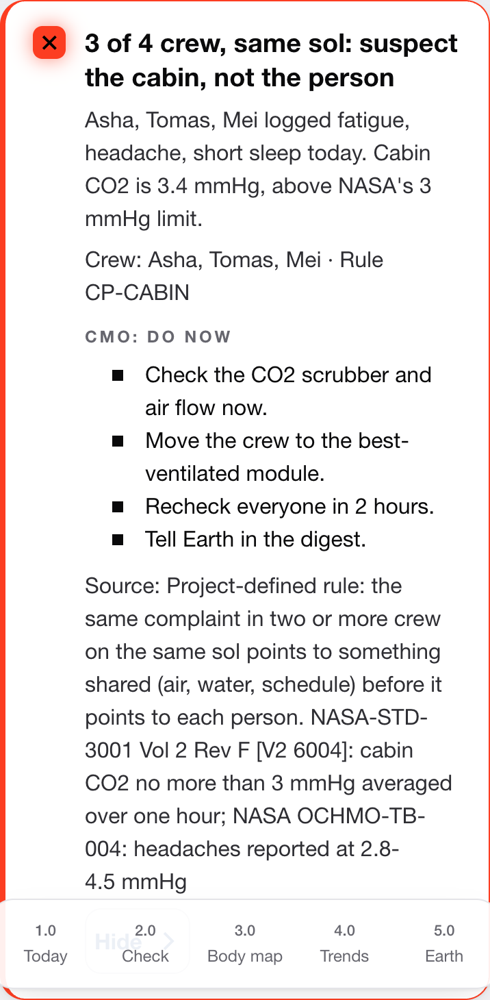

ASCLEPIUS
Medicine for when Earth is too far away ✦ Sol 212 ✦ Jezero ✦ 11.0 light-minutes ✦ Medicine for when Earth is too far away ✦ Sol 212 ✦ Jezero ✦
 EARTHRISE · NASA
EARTHRISE · NASA
OSD-569 · INSPIRATION4


EARTH ⇢ MARS · 11.0 MIN
NASA SPACE APPS 2026 · CHALLENGE: ASTRONAUT HEALTH
ASCLEPIUS
Medicine for when Earth
is too far away.
27 vs 10 minEarth's answer vs
time to act
4/4crew changed vs
their own normal
3.4 mmHgcabin CO2 · NASA limit 3.0
✓Earth guides
→Act, Earth confirms
!Crew decides
MISSION LOGCREW: 4 · SOL 212
BASE: JEZERO 18.4°N 77.5°E
LINK: JPL HORIZONS
RULES: NASA-STD-3001
Crew decides
Real NASA data
No AI decisions
Offline · encrypted
FIG. 01 · REPLY CLOCK
TULA MANISH · WARANGAL, INDIA · IMAGES: NASA/JPL/USGS, NASA · SIMULATED CREW DATA